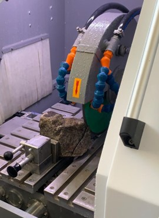

This project consisted of the mineralogical characterization of rocks, extracted in the district of Macossa using FRX and DRX techniques. The studies were carried out on a scale laboratory and equipment suitable for this purpose, in laboratory facilities of the National Mining Institute. The results of this research showed that XRF and DRX techniques, constitute complementary methods of analysis, when applied to the analysis of mineral composition of rocks. The research allowed to obtain data that will be useful for the development of different processing processes, and presenting a quantification of its constituents, represented by the valuable mineral and minerals belonging to waste, in addition to understand the levels of metals harmful to health that will be found in the waste and the applicability of techniques that meet the regulations imposed by environmental agencies current inspectors.
Mineralogical characterization of rocks of the Macossa – Manica Project
Laboratory Technician Trainee
